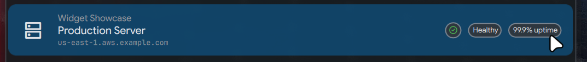

Advanced Features¶
This page covers pattern matching, daemon mode, plugin indexing, status badges, FAB override, and ambient items.
Pattern Matching¶
Show results instantly in main search without opening the plugin. When the user types something that matches your pattern, your handler receives a match step.
Use Cases¶
- Calculator:
2+2,$50 to EUR,10c(temperature) - URL opener:
github.com,docs.python.org - Unit converter:
10ft to m,5 miles in km
Enable in Manifest¶
{
"name": "Calculate",
"description": "Calculator with currency and units",
"icon": "calculate",
"supportedPlatforms": ["niri", "hyprland", "macos", "windows"],
"handler": {
"type": "stdio",
"path": "handler.py"
},
"match": {
"patterns": ["^=", "^[\\d\\.]+\\s*[\\+\\-\\*\\/]", "^[$€£¥]"],
"priority": 100
}
}
| Field | Type | Description |
|---|---|---|
patterns |
array | Regex patterns to match against user input |
priority |
number | Higher priority wins when multiple plugins match (default: 50) |
Handle the match Step¶
When user input matches any pattern, your handler receives:
Return a match response with a single result:
if step == "match":
result = calculate(query)
if result:
print(json.dumps({
"type": "match",
"result": {
"id": "calc_result",
"name": result, # "4"
"description": query, # "2+2"
"icon": "calculate",
"verb": "Copy",
"copy": result, # Copy on Enter
"notify": f"Copied: {result}",
"priority": 100
}
}))
else:
# No valid result - return null to hide
print(json.dumps({"type": "match", "result": None}))
return
Match Response Fields¶
| Field | Type | Description |
|---|---|---|
id |
string | Unique identifier |
name |
string | Primary display text (the result) |
description |
string | Secondary text (the input) |
icon |
string | Material icon name |
verb |
string | Action button text ("Copy", "Open") |
copy |
string | Text to copy on selection |
openUrl |
string | URL to open on selection |
notify |
string | Notification message after action |
close |
bool | Close launcher after action |
priority |
number | Ranking among match results |
actions |
array | Additional action buttons |
Pattern Examples¶
Calculator (plugins/calculate/manifest.json):
{
"match": {
"patterns": [
"^=", // Explicit: "=2+2"
"^[\\d\\.]+\\s*[\\+\\-\\*\\/\\^\\%]", // Math: "2+2", "10/5"
"^\\(", // Parentheses: "(2+3)*4"
"^(sin|cos|tan|sqrt|log)\\s*\\(", // Functions: "sqrt(16)"
"^-?\\d+\\.?\\d*\\s*°?[cf](\\s|$)", // Temperature: "10c", "34f"
"^[$€£¥₹]", // Currency: "$50"
"^\\d+\\.?\\d*\\s*%\\s*(of|off)\\s+" // Percentage: "20% of 32"
],
"priority": 100
}
}
URL opener (plugins/url/manifest.json):
Complete Handler Example¶
#!/usr/bin/env python3
import json
import sys
def main():
input_data = json.load(sys.stdin)
step = input_data.get("step", "initial")
query = input_data.get("query", "").strip()
# Pattern match from main search
if step == "match":
url = normalize_url(query)
print(json.dumps({
"type": "match",
"result": {
"id": "open_url",
"name": url,
"description": "Open in browser",
"icon": "open_in_browser",
"verb": "Open",
"openUrl": url,
"close": True,
"actions": [
{"id": "copy", "name": "Copy URL", "icon": "content_copy"}
]
}
}))
return
# Handle action (from match result or inside plugin)
if step == "action":
action = input_data.get("action", "")
url = input_data.get("selected", {}).get("id", "")
if action == "copy":
print(json.dumps({
"type": "execute",
"copy": url,
"notify": f"Copied: {url}",
"close": True
}))
else:
print(json.dumps({
"type": "execute",
"openUrl": url,
"close": True
}))
return
# Standard plugin flow (initial, search)
# ...
def normalize_url(url):
if not url.startswith(("http://", "https://")):
return "https://" + url
return url
if __name__ == "__main__":
main()
Priority Guidelines¶
| Priority | Use Case |
|---|---|
| 100+ | High confidence matches (calculator with = prefix) |
| 80-99 | Medium confidence (URL detection) |
| 50-79 | Lower confidence (fuzzy matches) |
When multiple plugins match the same input, higher priority wins.
Tips¶
- Be specific: Narrow patterns reduce false positives
- Return null for invalid input:
{"type": "match", "result": null}hides the result - Include actions: Secondary actions (copy, share) enhance usability
- Use priority: Ensure your plugin ranks appropriately against others
Example plugins: calculate/, url/
Daemon Mode¶
For plugins that need live updates, file watching, or persistent state, use daemon mode instead of spawning a new process for each request.
Enable in Manifest¶
| Field | Type | Default | Description |
|---|---|---|---|
enabled |
bool | false | Enable daemon mode |
background |
bool | false | Run always (true) or only when plugin open (false) |
Daemon Lifecycle¶
background: false- Starts when plugin opens, stops when it closes. Use for live displays (process monitors, media players).background: true- Starts when hamr launches, runs always. Use for file watching, status updates (todo counts, clipboard).
Daemon Handler Pattern¶
#!/usr/bin/env python3
import json
import os
import signal
import select
import sys
import time
def emit(data):
"""Emit JSON response (line-buffered)."""
print(json.dumps(data), flush=True)
def main():
# Graceful shutdown
signal.signal(signal.SIGTERM, lambda s, f: sys.exit(0))
signal.signal(signal.SIGINT, lambda s, f: sys.exit(0))
current_query = ""
last_refresh = 0
refresh_interval = 2.0
while True:
# Non-blocking stdin read with timeout
readable, _, _ = select.select([sys.stdin], [], [], 0.5)
if readable:
line = sys.stdin.readline()
if not line:
break # EOF - hamr closed connection
try:
request = json.loads(line.strip())
except json.JSONDecodeError:
continue
step = request.get("step", "")
if step == "initial":
current_query = ""
emit({
"type": "results",
"results": get_results(),
"placeholder": "Search..."
})
last_refresh = time.time()
continue
if step == "search":
current_query = request.get("query", "")
emit({
"type": "results",
"results": get_results(current_query)
})
last_refresh = time.time()
continue
if step == "action":
# Handle actions...
emit({"type": "results", "results": get_results(current_query)})
continue
# Periodic refresh
now = time.time()
if now - last_refresh >= refresh_interval:
emit({
"type": "results",
"results": get_results(current_query)
})
last_refresh = now
if __name__ == "__main__":
main()
Key Differences from Request-Response¶
| Aspect | Request-Response | Daemon |
|---|---|---|
| Process lifecycle | New per request | Single persistent |
| stdin | json.load(sys.stdin) |
readline() in loop |
| stdout | Single print | Multiple emit() calls |
| State | Stateless | Persistent variables |
| Updates | On user action | Can push anytime |
File Watching with inotify¶
For efficient file watching, use native inotify:
import ctypes
import ctypes.util
import struct
IN_CLOSE_WRITE = 0x00000008
IN_MOVED_TO = 0x00000080
IN_CREATE = 0x00000100
def create_inotify_fd(watch_path):
"""Create inotify fd watching a directory."""
try:
libc = ctypes.CDLL(ctypes.util.find_library("c"), use_errno=True)
fd = libc.inotify_init()
if fd < 0:
return None
watch_path.mkdir(parents=True, exist_ok=True)
mask = IN_CLOSE_WRITE | IN_MOVED_TO | IN_CREATE
wd = libc.inotify_add_watch(fd, str(watch_path).encode(), mask)
if wd < 0:
os.close(fd)
return None
return fd
except Exception:
return None
# Use in main loop
inotify_fd = create_inotify_fd(DATA_DIR)
if inotify_fd:
while True:
readable, _, _ = select.select([sys.stdin, inotify_fd], [], [], 1.0)
# Handle stdin and inotify events...
Example plugins: timer/, topcpu/, todo/, clipboard/
Plugin Indexing¶
Make your plugin's items searchable from the main launcher without opening the plugin.
Enable in Manifest¶
Indexing requires daemon mode - the daemon emits {"type": "index"} responses whenever data changes.
Handle the index Step¶
if step == "index":
print(json.dumps({
"type": "index",
"items": [
{
"id": "app:firefox",
"name": "Firefox",
"description": "Web Browser",
"icon": "firefox",
"iconType": "system",
"keywords": ["browser", "web"],
"verb": "Open",
"execute": {
"launch": "/usr/share/applications/firefox.desktop"
}
}
]
}))
return
Index Item Fields¶
| Field | Type | Required | Description |
|---|---|---|---|
id |
string | Yes | Unique identifier |
name |
string | Yes | Display name (searchable) |
description |
string | No | Subtitle |
icon |
string | No | Icon name |
iconType |
string | No | "material" or "system" |
keywords |
array | No | Additional search terms |
verb |
string | No | Action text (e.g., "Open") |
entryPoint |
object | Yes | How to invoke the handler (see below) |
actions |
array | No | Secondary action buttons |
Understanding entryPoint¶
entryPoint is only needed for indexed items - items that appear in main search outside your plugin.
When a user selects an indexed item from main search, hamr has no context about your plugin. The entryPoint is a stored "recipe" that tells hamr what request to send to your handler.
When entryPoint is needed:
| Scenario | entryPoint needed? |
|---|---|
Plugin without indexing (index.enabled: false) |
No |
| Result items inside an active plugin | No |
| Index items (appear in main search) | Yes |
For most simple plugins without indexing, you never need entryPoint.
entryPoint Schema¶
| Field | Type | Default | Description |
|---|---|---|---|
step |
string | "action" |
Step type to send to handler |
selected |
object | - | Selected item info, usually {"id": "..."} |
action |
string | - | Which action to perform |
query |
string | - | Query string (for search-based entry points) |
entryPoint vs action¶
| Concept | What it is | Example |
|---|---|---|
entryPoint |
Blueprint/recipe for invoking the handler | {"step": "action", "selected": {"id": "x"}, "action": "copy"} |
action |
String identifier for which operation | "copy", "delete", "edit" |
Full Indexing Flow¶
The complete flow from indexing to execution:
sequenceDiagram
participant Handler
participant Hamr
participant Index as Search Index
participant User
Note over Handler,Index: 1. Indexing Phase
Hamr->>Handler: {"step": "index"}
Handler->>Hamr: {"type": "index", "items": [<br/> {id, name, entryPoint: {...}, actions: [...]}<br/>]}
Hamr->>Index: Store items with entryPoints
Note over User,Handler: 2. Execution Phase (later)
User->>Hamr: Types "github" in main search
Index->>Hamr: Returns matching indexed items
Hamr->>User: Shows "GitHub" item
User->>Hamr: Clicks "Copy Password" action
Note over Hamr: Reads action's entryPoint:<br/>{step: "action", selected: {id: "..."}, action: "copy_password"}
Hamr->>Handler: {"step": "action", "selected": {"id": "github-login"}, "action": "copy_password"}
Handler->>Hamr: {"type": "execute", "notify": "Copied!", "close": true}Key points:
- Handler provides
entryPoint- Hamr doesn't construct it automatically - Hamr stores
entryPoint- Saved with indexed items for later use - Handler receives standard request - Same format as inside-plugin clicks
Inside Plugin vs Main Search¶
The handler receives the same request format regardless of origin:
flowchart TB
subgraph "Inside Plugin"
A[User clicks item/action] --> B[Hamr builds request<br/>from click context]
end
subgraph "Main Search"
C[User clicks indexed item] --> D[Hamr reads stored entryPoint]
D --> E[Hamr builds request<br/>from entryPoint]
end
B --> F["Handler receives:<br/>{step, selected, action}"]
E --> F
style F fill:#c8e6c9Inside plugin: Hamr builds the request directly - no entryPoint needed in result items.
From main search: Hamr uses the stored entryPoint from the index response.
Handler logic is identical for both:
if step == "action":
item_id = selected.get("id")
action = input_data.get("action", "")
if action == "copy_password":
# User clicked the "Copy Password" button
pass
else:
# User clicked the item itself (default action)
pass
Index Item Example¶
The handler must provide entryPoint on index items and their actions:
{
"id": "github-login",
"name": "GitHub",
"icon": "key",
"entryPoint": { # Required: default click
"step": "action",
"selected": {"id": "github-login"}
},
"actions": [
{
"id": "copy_password",
"name": "Copy Password",
"icon": "key",
"entryPoint": { # Required: action button click
"step": "action",
"selected": {"id": "github-login"},
"action": "copy_password"
}
}
]
}
Why the handler must provide entryPoint:
- Hamr doesn't know what
stepto use (could be"action","search", etc.) - Hamr doesn't know what fields
selectedshould contain - Hamr doesn't know what
actionstring maps to each button
Index-Only Plugins¶
For plugins that only provide indexed items (no interactive mode), set indexOnly: true and use a daemon handler to emit index responses:
{
"name": "Zoxide",
"description": "Jump to directories",
"icon": "folder_special",
"supportedPlatforms": ["niri", "hyprland"],
"handler": {
"type": "stdio",
"path": "handler.py"
},
"indexOnly": true,
"daemon": {
"enabled": true,
"background": true
}
}
The daemon handler emits index responses but returns an error for interactive steps.
Incremental Indexing¶
For efficient updates with large datasets:
if step == "index":
mode = input_data.get("mode", "full")
indexed_ids = set(input_data.get("indexedIds", []))
if mode == "incremental" and indexed_ids:
current_items = get_all_items()
current_ids = {item["id"] for item in current_items}
new_items = [i for i in current_items if i["id"] not in indexed_ids]
removed_ids = list(indexed_ids - current_ids)
print(json.dumps({
"type": "index",
"mode": "incremental",
"items": new_items,
"remove": removed_ids
}))
else:
print(json.dumps({
"type": "index",
"items": get_all_items()
}))
Example plugins: apps/, bitwarden/
Search Ranking¶
Understanding how Hamr ranks search results helps you optimize your plugin's index items for discoverability.
Ranking Algorithm¶
Hamr combines multiple signals to rank results:
| Signal | Weight | Description |
|---|---|---|
| Fuzzy Score | 0-1000 | Base relevance from fuzzysort matching |
| Exact Match | +500 | Query exactly matches item name |
| Frecency | 0-300 | Usage frequency × recency multiplier |
| History Term | +200 | Query matches a learned search term |
Frecency Calculation¶
Frecency combines usage count with recency decay:
| Time Since Last Use | Multiplier |
|---|---|
| < 1 hour | 4× |
| < 24 hours | 2× |
| < 7 days | 1× |
| > 7 days | 0.5× |
Diversity (Decay)¶
To prevent a single plugin from dominating results, Hamr applies exponential decay to consecutive results from the same plugin:
With default decay_factor = 0.7:
- 1st item from plugin: 100% score
- 2nd item from plugin: 70% score
- 3rd item from plugin: 49% score
- 4th item from plugin: 34% score
This ensures diverse results even when one plugin has many high-scoring matches.
Optimizing Your Index Items¶
- Use descriptive
namefields (primary search target) - Add
keywordsfor alternative search terms users might type
Example with keywords:
{
"id": "app:firefox",
"name": "Firefox",
"keywords": ["browser", "web", "internet", "mozilla"],
"icon": "firefox",
"iconType": "system"
}
Keyword weighting: Name matches score 1.0×, keyword matches score 0.3×.
Configuration¶
Users can tune search behavior in ~/.config/hamr/config.json:
| Option | Default | Description |
|---|---|---|
diversityDecay |
0.7 | Decay factor (0-1). Lower = more diverse results |
maxResultsPerPlugin |
0 | Hard limit per plugin (0 = no limit, decay only) |
Plugin Status¶
Display dynamic status (badges, description) on your plugin's entry in the main list.

Via Response¶
Include status in your response:
{
"type": "results",
"results": [...],
"status": {
"badges": [{"text": "5", "color": "#f44336"}],
"chips": [{"text": "5 tasks", "icon": "task_alt"}],
"description": "5 pending tasks" # Overrides manifest
}
}
Via CLI¶
Badge Format¶
{
"text": "5", # 1-3 characters
"icon": "star", # Material icon (overrides text)
"image": "/path/to/avatar.png", # Image (overrides text/icon)
"color": "#ffffff" # Text/icon color
}
Badges use the theme's surface color as background (not customizable).
Chip Format¶
Example plugin: todo/
FAB Override¶
Override the floating action button (FAB) when launcher is minimized.
| Normal FAB | With Override |
|---|---|
 |
Set FAB Override¶
Include in status update:
emit({
"type": "status",
"status": {
"fab": {
"chips": [{"text": "04:32", "icon": "timer"}],
"priority": 10,
"showFab": true # Force FAB visible
}
}
})
| Field | Type | Description |
|---|---|---|
chips |
array | Chip widgets to display |
badges |
array | Badge widgets to display |
priority |
number | Higher wins if multiple plugins set FAB |
showFab |
bool | Force FAB visible when launcher closed |
Clear FAB Override¶
Example plugin: timer/
Ambient Items¶
Persistent status items shown in the action bar below search.

Set Ambient Items¶
emit({
"type": "status",
"status": {
"ambient": [
{
"id": "timer-1",
"name": "Focus Timer",
"description": "24:32 remaining",
"icon": "timer",
"actions": [
{"id": "pause", "icon": "pause", "name": "Pause"},
{"id": "stop", "icon": "stop", "name": "Stop"}
],
"duration": 0 # 0 = permanent
}
]
}
})
Action Handling¶
When user clicks an ambient item action:
When user dismisses:
Clear Ambient Items¶
Example plugin: timer/
Platform Support¶
Specify which platforms your plugin supports:
| Value | Description |
|---|---|
["hyprland"] |
Hyprland only |
["niri"] |
Niri only |
["niri", "hyprland"] |
Linux Wayland compositors |
["macos"] |
macOS only |
["windows"] |
Windows only |
["niri", "hyprland", "macos", "windows"] |
All platforms (list explicitly) |
Guidelines:
- Uses
hyprctl→["hyprland"] - Uses
niri msg→["niri"] - Uses generic tools (
wl-copy,notify-send) →["niri", "hyprland"] - Truly cross-platform (no compositor-specific calls) →
["niri", "hyprland", "macos", "windows"]
Note: There is no wildcard support. List all supported platforms explicitly.
Frecency Tracking¶
Control how your plugin's usage is recorded:
| Value | Behavior | Use Case |
|---|---|---|
"item" |
Track individual items (default) | Apps, clipboard, emojis |
"plugin" |
Track plugin only | Todo, notes, bitwarden |
"none" |
Don't track | Monitoring plugins |
Guidelines:
- Items are sensitive →
"plugin" - Items are ephemeral →
"plugin"or"none" - Plugin is for monitoring →
"none"
IPC Communication¶
Hamr IPC Targets¶
# Toggle launcher
qs -c hamr ipc call hamr toggle
# Open specific workflow
qs -c hamr ipc call hamr workflow bitwarden
# Refresh shell history
qs -c hamr ipc call shellHistoryService update
From Python¶
import subprocess
def call_ipc(config, target, method, *args):
subprocess.Popen(
["qs", "-c", config, "ipc", "call", target, method] + list(args),
stdout=subprocess.DEVNULL,
stderr=subprocess.DEVNULL,
)
# Examples
call_ipc("hamr", "hamr", "toggle")
call_ipc("ii", "todo", "refresh") # Cross-config IPC
Example plugin: todo/ - Syncs with external sidebar widget
Launch Timestamp API¶
Get when hamr was opened (useful for trimming recordings, etc.):
from pathlib import Path
TIMESTAMP_FILE = Path.home() / ".cache" / "hamr" / "launch_timestamp"
def get_launch_time():
"""Get timestamp (ms) when hamr opened."""
try:
return int(TIMESTAMP_FILE.read_text().strip())
except (FileNotFoundError, ValueError):
return int(time.time() * 1000)
Example plugin: screenrecord/
CLI Reference¶
Users can bind keys in their compositor config for quick access to Hamr and specific plugins.
Commands¶
hamr # Start hamr daemon (autostart)
hamr toggle # Toggle launcher open/close
hamr plugin <name> # Open a specific plugin directly
hamr status <id> <json> # Update plugin status
hamr audio <subcommand> # Audio control
Keybinding Examples¶
Hyprland (~/.config/hypr/hyprland.conf):
bind = SUPER, Space, exec, hamr toggle
bind = SUPER, V, exec, hamr plugin clipboard
bind = SUPER, E, exec, hamr plugin emoji
bind = SUPER, P, exec, hamr plugin bitwarden
Niri (~/.config/niri/config.kdl):
Mod+Space { spawn "hamr" "toggle"; }
Mod+V { spawn "hamr" "plugin" "clipboard"; }
Mod+E { spawn "hamr" "plugin" "emoji"; }
Update Plugin Status¶
Update badges, chips, or description from external scripts:
hamr status todo '{"badges": [{"text": "5"}]}'
hamr status todo '{"chips": [{"text": "3 tasks", "icon": "task_alt"}]}'
hamr status todo '{"description": "5 pending tasks"}'
hamr status todo '{}' # Clear status
Audio Commands¶
hamr audio play <sound> # Play a sound
hamr audio status # Show audio status
hamr audio enable # Enable sound effects
hamr audio disable # Disable sound effects
hamr audio reload # Reload sound files
Built-in sounds: alarm, timer, complete, notification, error, warning
Low-Level IPC¶
For advanced use, call IPC targets directly via qs:
qs -c hamr ipc call hamr toggle
qs -c hamr ipc call pluginRunner reindex apps
qs -c hamr ipc call shellHistoryService update
| Target | Method | Description |
|---|---|---|
hamr |
toggle |
Toggle launcher |
hamr |
plugin <name> |
Open plugin |
pluginRunner |
updateStatus <id> <json> |
Update plugin status |
pluginRunner |
reindex <id> |
Trigger plugin reindex |
shellHistoryService |
update |
Refresh shell history |
audio |
play <sound> |
Play sound |